A project I made during my time in the Apple Foundation Program. A women's health app designed to help Melbourne users find bulk-billing clinics, GPs, and health services nearby.
Peaché is a women's health app designed to help users find healthcare they can both afford and trust. The app lets users search for GPs, specialists, breast screenings, free STI screenings, and free hygiene product providers — filtered by cost, location, and specialty — so that financial and logistical barriers no longer stand between women and the care they need.
Peaché was built as part of the Apple Foundation Program 2026 — a competitive three-week program run by Apple. The process was far more than just coding: the first two weeks were spent conceiving the idea, pitching and refining the concept for Apple's approval, conducting user research, and designing the full interface in Figma. Only once the concept and design were signed off did we move into development — which I completed solo in three days using SwiftUI and Xcode.
I was responsible for both the UI/UX design and the entire codebase across a multidisciplinary team of three. At the end of the program, I presented Peaché live to an Apple panel and was awarded a Certificate of Completion from the Apple Foundation Program.
The final build is a happy path prototype — a deliberate, focused choice given that the coding phase was just three days. The dataset was manually sourced and scoped to three specific Melbourne postcodes, covering enough real providers to make the experience feel genuine without overextending the timeline.
The real constraint wasn't the code — it was the full journey that came before it. Getting an idea approved by Apple, validating it through research, designing a complete UI system, and then building a working app across three weeks as a student is a different kind of challenge to a standard project. Every decision had to be justified, refined, and signed off before we could move to the next stage.
This project taught me that if you focus, you have the capacity to learn almost anything. In three weeks I went from no SwiftUI knowledge to a working iOS app — not because it was easy, but because the goal was clear and the motivation was real. That realisation has stayed with me: the discipline doesn't matter as much as the drive.
Working in a multidisciplinary team also showed me how much faster and further you go when everyone brings a different lens. Sitting alongside people who think about problems differently — whether through design, research, or strategy — made the final product something none of us could have built alone.
Apple Presentation — the deck I presented to the Apple panel at the end of the program
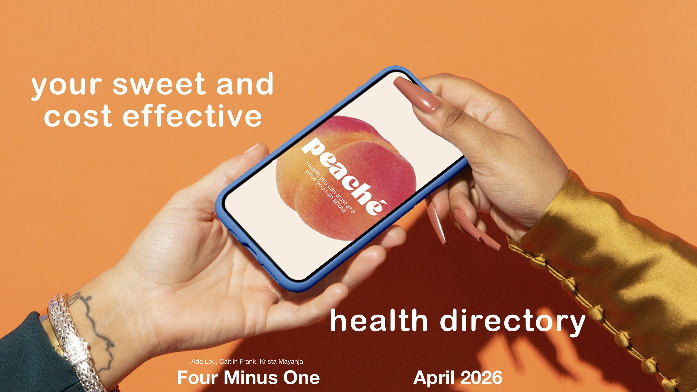
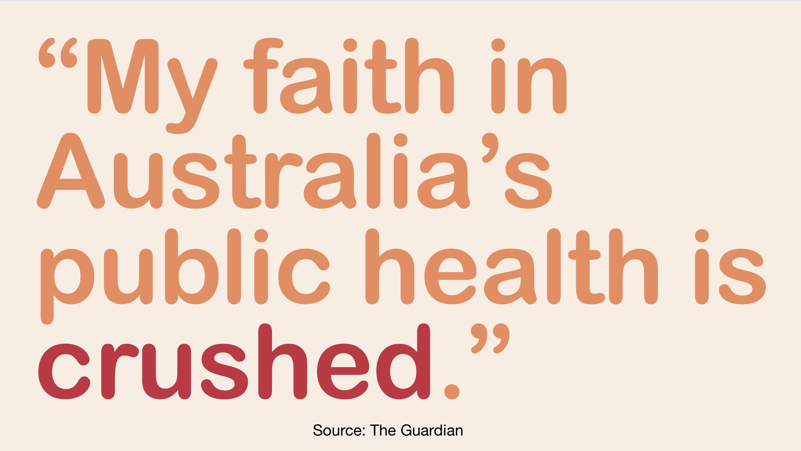
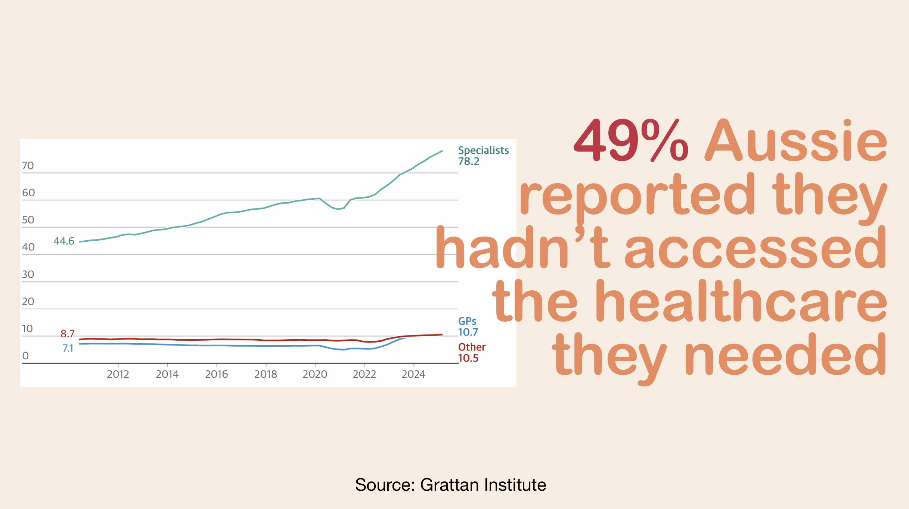
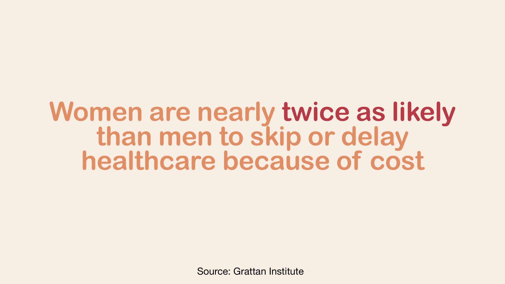
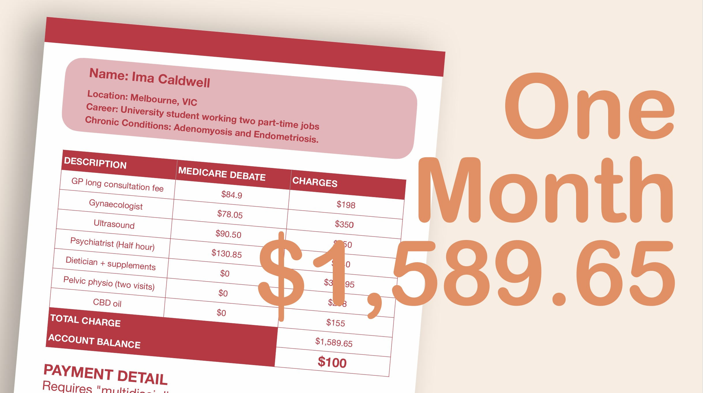
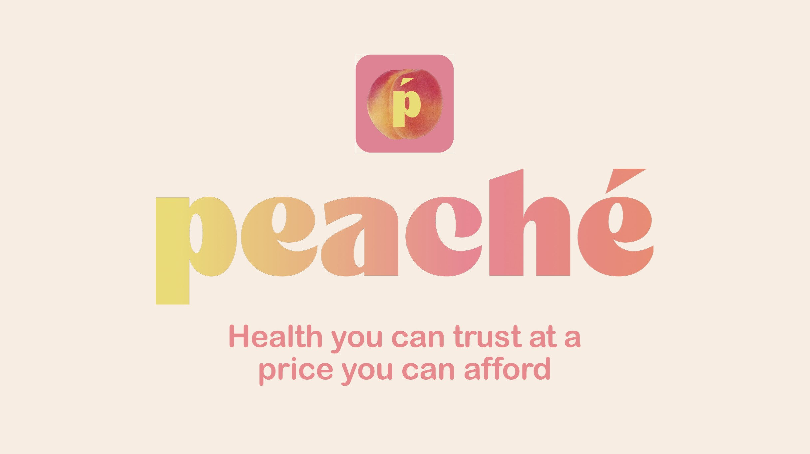
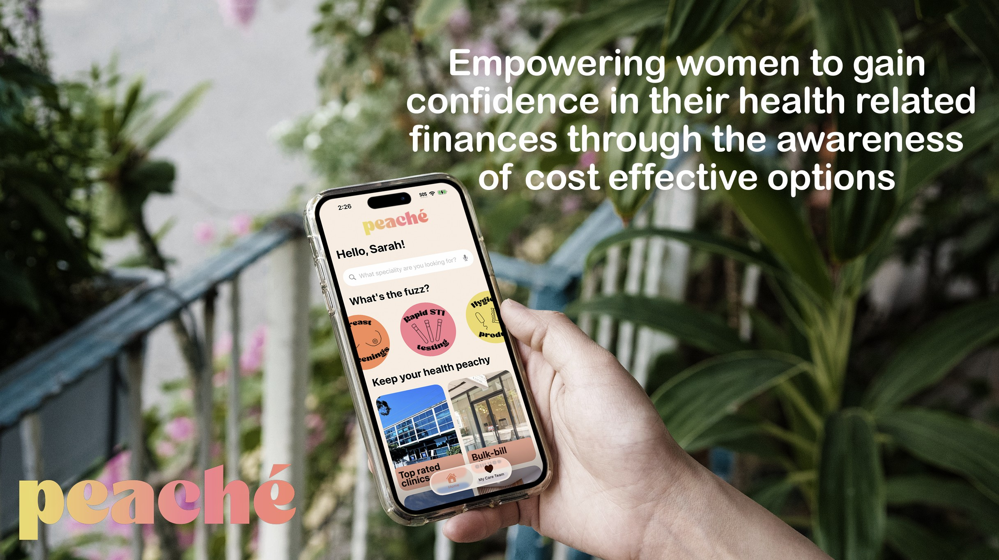
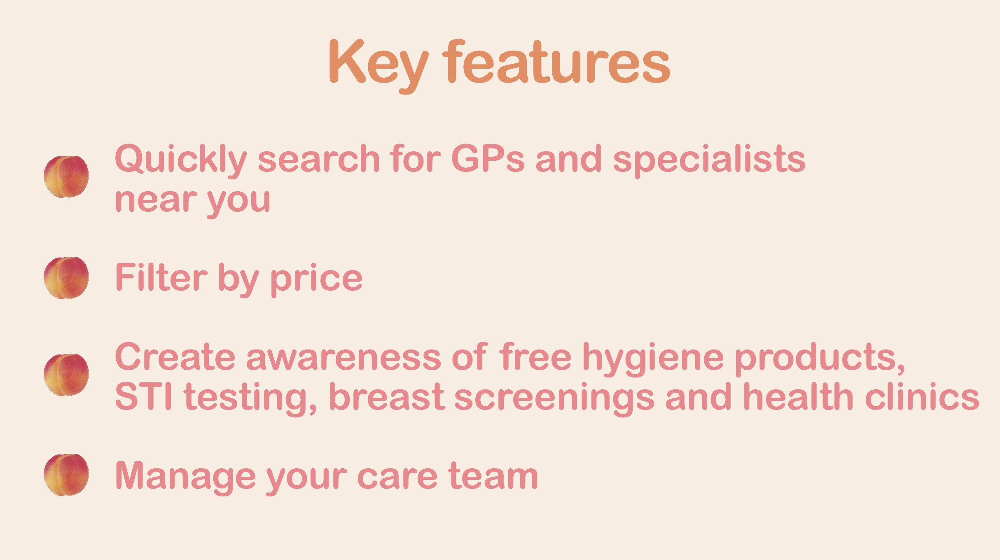
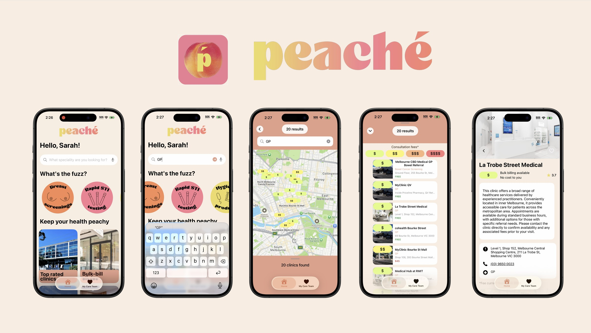
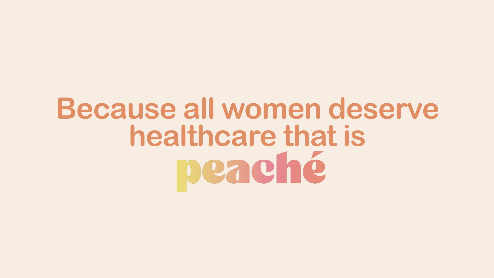
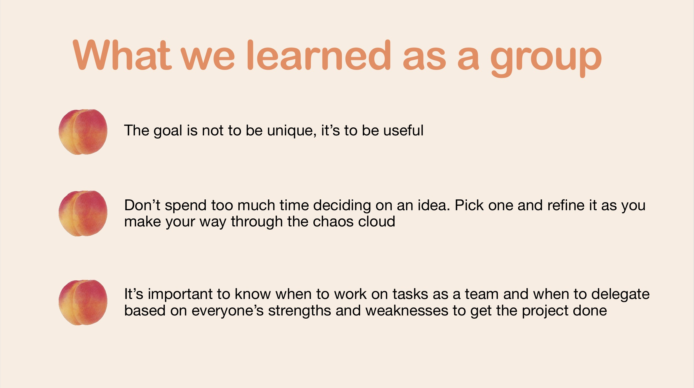
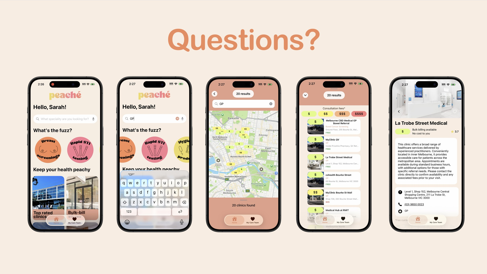
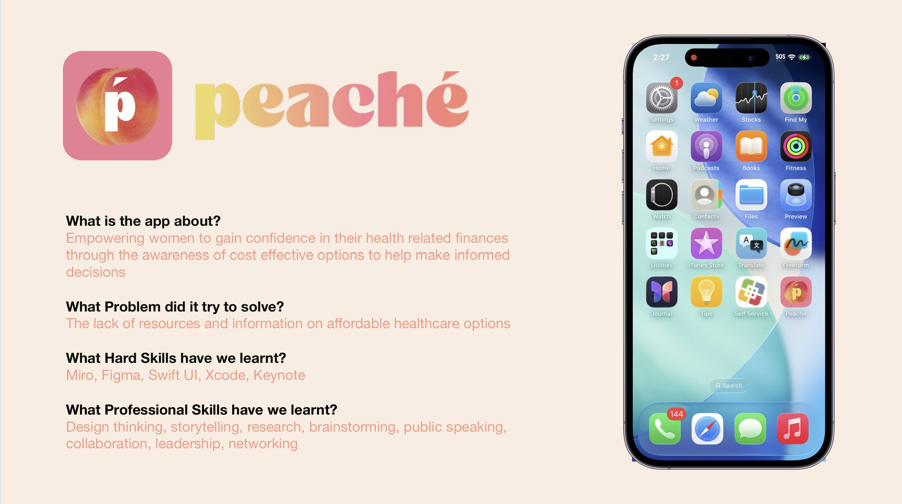